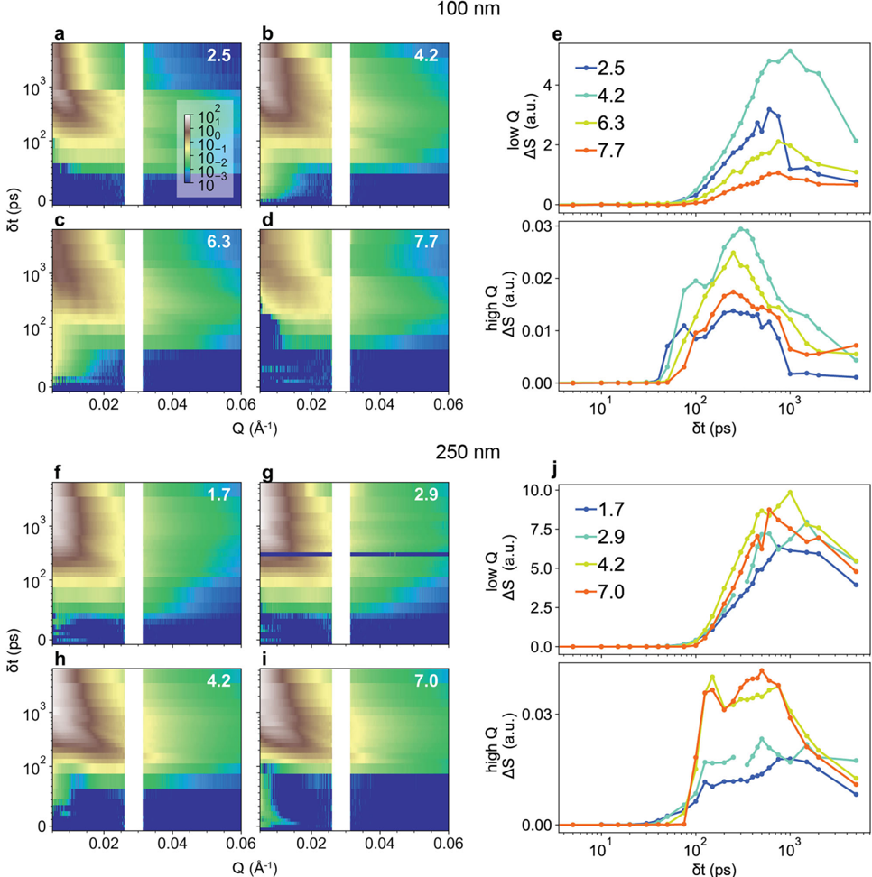
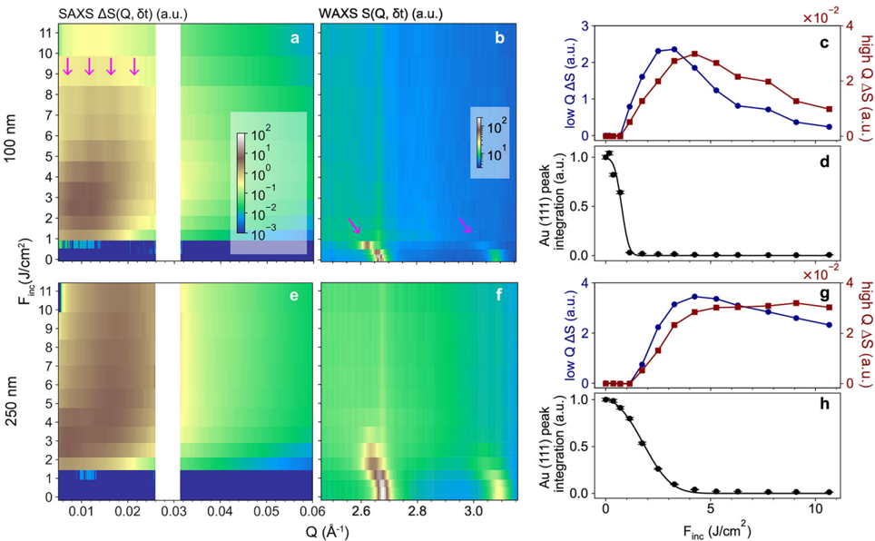
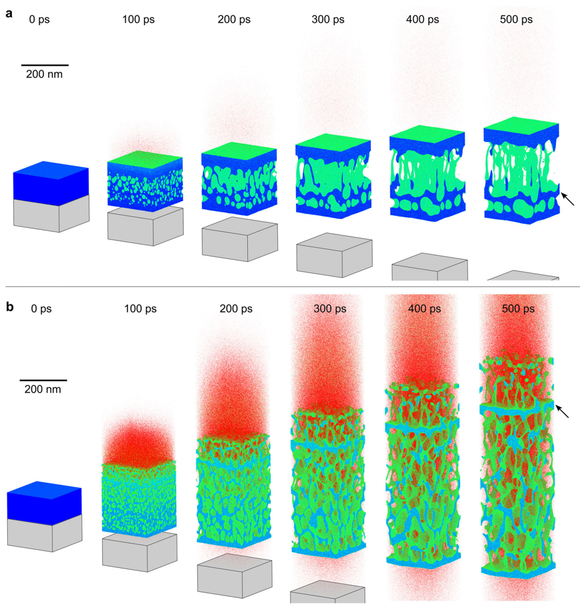
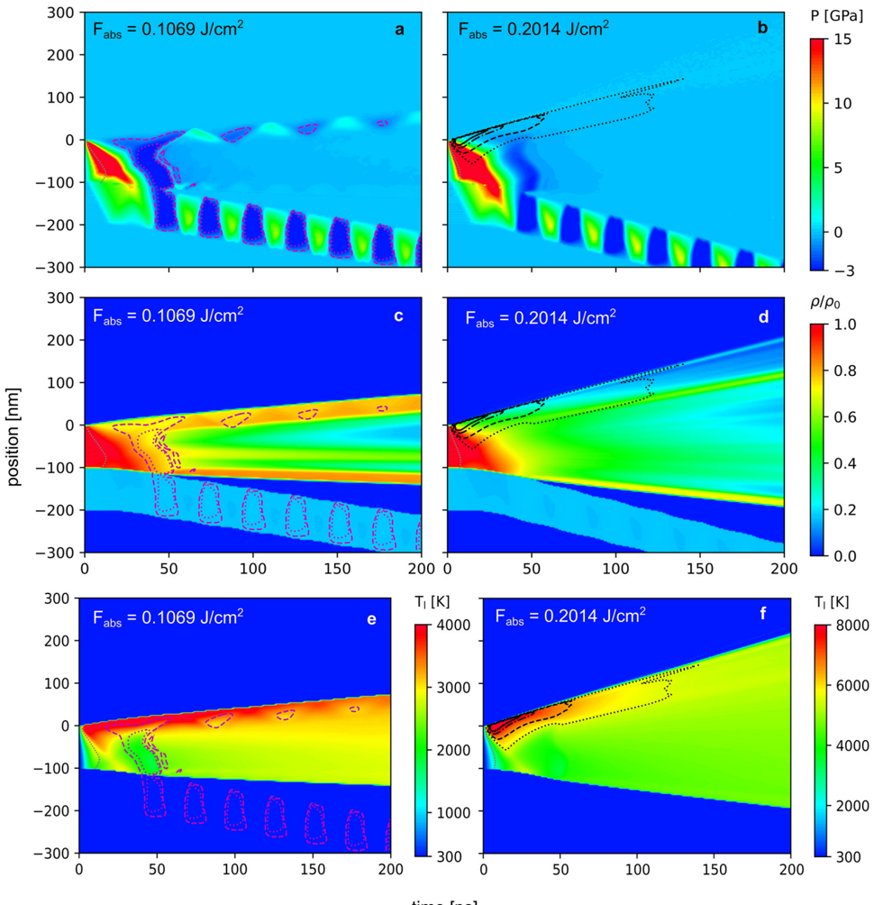
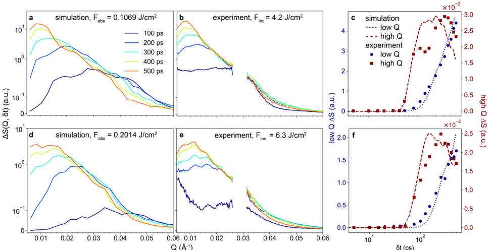
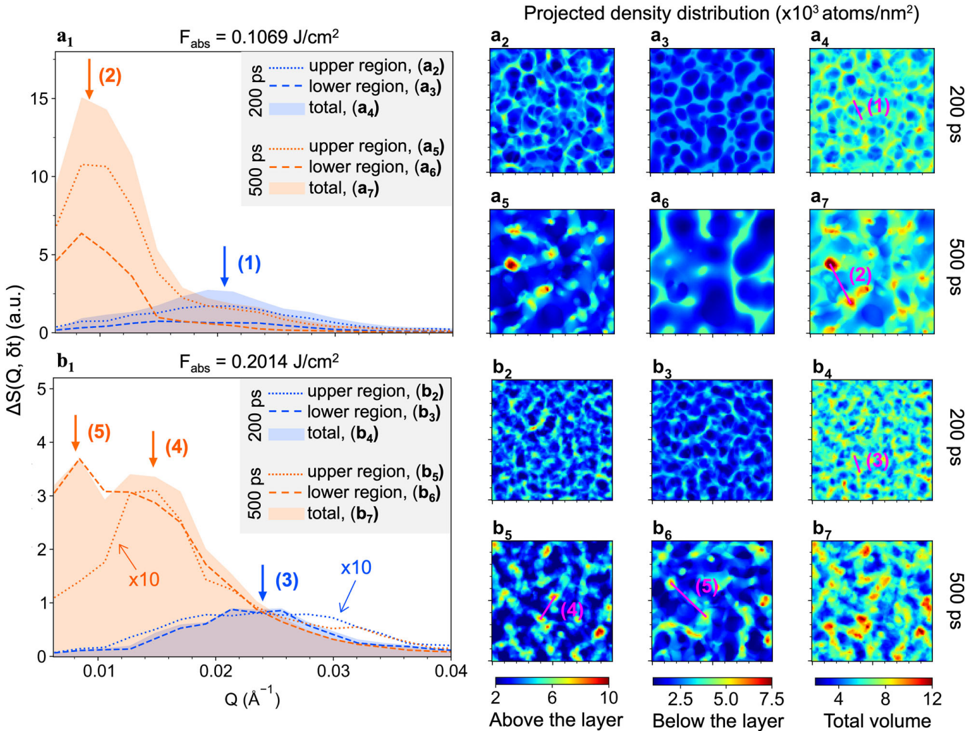

Autores: Y. Sun, C. Chen, T. J. Albert, … L. V. Zhigilei, K. Sokolowski-Tinten (SLAC, UVA, Univ. Duisburg-Essen)
Revista: Communications Materials 6, 69 (2025), DOI: 10.1038/s43246-025-00785-4
Idea central
Estudio combinado experimento + simulación que reconstruye los procesos de descomposición de fase nanoescala durante la ablación láser ultracorta de films delgados de oro. Combina:
- Difracción de rayos-X femtosegundo (LCLS / SLAC) resuelta en tiempo.
- Dinámica molecular a gran escala.
Fenómeno físico
Cuando un pulso de fs ilumina un metal:
- Excitación electrónica ultrarrápida.
- Acoplamiento electrón-fonón → calentamiento atómico.
- Stress confinement → ondas mecánicas y tensiones extremas.
- Descomposición de fase del material superheated:
- Spallation (a fluencia baja): nucleación y crecimiento de nano-voids sub-superficie → ejección de capa líquida.
- Phase explosion (a fluencia alta): explosión volumétrica → vapor + clusters atómicos + gotitas líquidas.
Lo que aporta el paper
Experimento
- Pulsos X-ray fs miden características de small-angle diffraction durante la expansión del plume de ablación.
- Mapea la emergencia y crecimiento de heterogeneidades de densidad nanoescala en tiempo real.
Simulación
- MD a gran escala (Zhigilei et al.) predice cuándo y cómo aparecen estas heterogeneidades.
- Identifica las firmas características de spallation vs phase explosion en la difracción.
Mapeo experimento ↔ simulación
- Las firmas predichas por MD se identifican en los datos X-ray → validación cruzada.
- Permite distinguir mecanismos que ocurren simultáneamente en el plume.
Por qué importa
- Es un caso modelo de probing extremo de condiciones lejos del equilibrio termodinámico y mecánico.
- La metodología (X-ray fs + MD multi-escala) puede aplicarse a otros procesos rápidos: choque, irradiación intensa, ablación pulsada para fabricación.
Conexiones
- Mecanismos de nucleación de voids comparten física con [[voxel_voids_nucleacion_Hemani_2014]] (análisis MD voxel) y [[UNet_nucleacion_voids_tantalio_Anantharanga_2025]] (predicción ML de sitios de nucleación).
- Complementario a [[MD_cascadas_CuNi_irradiacion_Wei_2025]] (otro escenario MD de daño extremo, pero por irradiación iónica).
Comentario
El archivo era test1.pdf (y test0.pdf era duplicado). No tenía resumen previo — quizás lo subiste sin clasificar. Si el tema no te resulta central, es un buen paper "tangente" para referenciar al hablar de procesos lejos del equilibrio.
Figuras del Paper (13)
Sin caption
Figura en pagina 1.
Sin caption
Figura en pagina 1.
Sin caption
Figura en pagina 1.

Fig. 1 | Experimental setup with simultaneous small- and wide-angle scattering measurements. a Schematic of the femtosecond laser pump, X-ray FEL probe experiment. The samples are 100 nm thick Au fi lms deposited on Si 3 N4 membranes made from 4 in. silicon wafers. The wafer is mounted on translation stages for 2D rastering. The SAXS scattering pattern shown in the schematic is detected by one of the four ePix100s placed at small angles. A JungFrau-1M detector is used to capture
Fig. 1 | Experimental setup with simultaneous small- and wide-angle scattering measurements. a Schematic of the femtosecond laser pump, X-ray FEL probe experiment. The samples are 100 nm thick Au fi lms deposited on Si 3 N4 membranes made from 4 in. silicon wafers. The wafer is mounted on translation stages for 2D rastering. The SAXS scattering pattern shown in the schematic is detected by one of the four ePix100s placed at small angles. A JungFrau-1M detector is used to capture

the WAXS from the sample. At negative delays ( δ t < 0 ps), it captures Au (111) and Au (200) polycrystalline Bragg peaks from the fi lm, as shown in the schematic. b A zoomed-in view of the cross-section of a membrane window. c The difference scattering pattern measured by all four ePix100 detectors. The small-angle images in a and c are measured at 250 ps after laser excitation at an incident laser fl uence of 6.3 J/cm 2 .
the WAXS from the sample. At negative delays ( δ t < 0 ps), it captures Au (111) and Au (200) polycrystalline Bragg peaks from the fi lm, as shown in the schematic. b A zoomed-in view of the cross-section of a membrane window. c The difference scattering pattern measured by all four ePix100 detectors. The small-angle images in a and c are measured at 250 ps after laser excitation at an incident laser fl uence of 6.3 J/cm 2 .

Fig. 2 | Temporal evolution of the WAXS and SAXS patterns measured for a 100 nm fi lm irradiated at an incident laser fl uence of 6.3 J/cm 2 . First row: Timeresolved WAXS signal. Second and third rows: SAXS intensity measurement on the detector at the smallest angle. The pattern labeled as -5 ps shows the S ( Q ) pattern
Fig. 2 | Temporal evolution of the WAXS and SAXS patterns measured for a 100 nm fi lm irradiated at an incident laser fl uence of 6.3 J/cm 2 . First row: Timeresolved WAXS signal. Second and third rows: SAXS intensity measurement on the detector at the smallest angle. The pattern labeled as -5 ps shows the S ( Q ) pattern

used as the reference in the evaluation of the difference patterns Δ S ( Q , δ t)) = S( Q , δ t) -S( Q , -5 ps) plotted in all other SAXS images. The arrow corresponds to a wavevector of 0.01 Å � 1 .
used as the reference in the evaluation of the difference patterns Δ S ( Q , δ t)) = S( Q , δ t) -S( Q , -5 ps) plotted in all other SAXS images. The arrow corresponds to a wavevector of 0.01 Å � 1 .

Fig. 4 | Examples of time resolved difference SAXS signal Δ S(Q, δ t). a -d Difference SAXS signals measured for 100 nm fi lms irradiated at incident laser fl uences of 2.5 J/cm 2 , 4.2 J/cm 2 , 6.3 J/cm 2 , and 7.7 J/cm 2 . f -i Difference SAXS signals measured for 250 nm fi lms irradiated at incident laser fl uences of 1.7 J/cm 2 , 2.9 J/ cm 2 , 4.2 J/cm 2 , and 7.0 J/cm 2 . The color bar shown in a is shared by all eight false
Fig. 4 | Examples of time resolved difference SAXS signal Δ S(Q, δ t). a -d Difference SAXS signals measured for 100 nm fi lms irradiated at incident laser fl uences of 2.5 J/cm 2 , 4.2 J/cm 2 , 6.3 J/cm 2 , and 7.7 J/cm 2 . f -i Difference SAXS signals measured for 250 nm fi lms irradiated at incident laser fl uences of 1.7 J/cm 2 , 2.9 J/ cm 2 , 4.2 J/cm 2 , and 7.0 J/cm 2 . The color bar shown in a is shared by all eight false

Fig. 5 | Laser fl uence dependence. Radial average of the difference SAXS in ( a ) and WAXS in ( b ) measured with different laser fl uences at a delay δ t = 250 ps for the 100 nm Au fi lm. The corresponding intensity changes in the low and high Q regions, and the Au (111) Bragg peak integrated intensity are displayed in ( c , d ). The magenta arrows in a highlight the sub-peaks in the SAXS pro fi le and in b indicate the shift of
Fig. 5 | Laser fl uence dependence. Radial average of the difference SAXS in ( a ) and WAXS in ( b ) measured with different laser fl uences at a delay δ t = 250 ps for the 100 nm Au fi lm. The corresponding intensity changes in the low and high Q regions, and the Au (111) Bragg peak integrated intensity are displayed in ( c , d ). The magenta arrows in a highlight the sub-peaks in the SAXS pro fi le and in b indicate the shift of

Fig. 6 | Snapshots of atomic con fi gurations from simulations of laser ablation of Au fi lms. The simulations are performed for 100 nm fi lms deposited on a 100 nm thick Si 3 N4 membrane and irradiated by a 50 fs laser pulses. The absorbed laser fl uence is 0.1069 J/cm 2 in ( a ) and 0.2014 J/cm 2 in ( b ). The Au atoms are colored by potential energy in the range of -3.5 to -1 eV, so that the solid and molten Au is
Fig. 6 | Snapshots of atomic con fi gurations from simulations of laser ablation of Au fi lms. The simulations are performed for 100 nm fi lms deposited on a 100 nm thick Si 3 N4 membrane and irradiated by a 50 fs laser pulses. The absorbed laser fl uence is 0.1069 J/cm 2 in ( a ) and 0.2014 J/cm 2 in ( b ). The Au atoms are colored by potential energy in the range of -3.5 to -1 eV, so that the solid and molten Au is

Sin caption
Figura en pagina 9.

Sin caption
Figura en pagina 10.

Fig. 9 | Depth-resolved dynamics of nanoscale phase decomposition as revealed by the simulations. The left panels a1 and b1 show the radially averaged difference SAXS intensity pro fi les predicted for 200 ps and 500 ps after the laser pulse in simulations performed for absorbed laser fl uences of 0.1069 J/cm 2 and 0.2014 J/cm 2 . Theshaded areas show the total intensity, while the dotted and dashed lines show the contributions to the scattering intensity from regions located above and below the corresponding liquid layers marked by the black arrows in Fig. 6. The contribution
Fig. 9 | Depth-resolved dynamics of nanoscale phase decomposition as revealed by the simulations. The left panels a1 and b1 show the radially averaged difference SAXS intensity pro fi les predicted for 200 ps and 500 ps after the laser pulse in simulations performed for absorbed laser fl uences of 0.1069 J/cm 2 and 0.2014 J/cm 2 . Theshaded areas show the total intensity, while the dotted and dashed lines show the contributions to the scattering intensity from regions located above and below the corresponding liquid layers marked by the black arrows in Fig. 6. The contribution